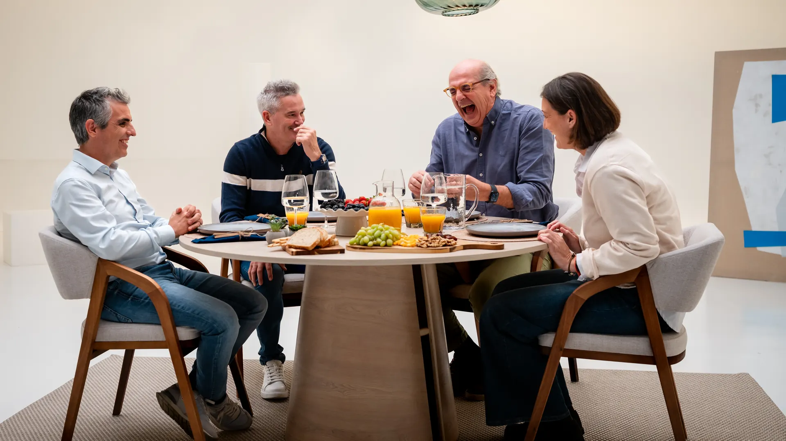

En colaboración con Banco Sabadell
Serie · 6 episodios
Conversaciones que inspiran
Hacer empresa
Las decisiones que cambian el rumbo de una empresa, contadas por quienes las tomaron. Seis conversaciones en vídeo con fundadores, directivos, equipos y colaboradores sobre arriesgar, elegir y saber renunciar
Ver todos los episodiosNuevo
Episodio 01 ·

Ver episodioNOX
Emprender a los 40 años en un negocio donde pocos veían oportunidades
Jesús Ballvé, fundador de NOX, recuerda los errores que casi acabaron con su empresa y las decisiones que le permitieron seguir adelante
Los episodios
6 episodios
-
01
NOX

Emprender a los 40 y desafiar las dudas
-
02
Próximamente
-
03
Próximamente
-
04
Próximamente
-
05
Próximamente
-
06
Próximamente
La decisión
Episodio 01 · NOX
Viajar a China con una pala y una última oportunidad
Ver el episodio“Los fallos habían sido nuestros y estaba en nuestra mano rectificar y aprender, y volver a hacerlo bien”
Jesús Ballvé, fundador y CEO de NOX
Sobre la serie
Detrás de cada empresa, una decisión
Hacer empresa es una serie de seis conversaciones en vídeo, impulsada por Banco Sabadell, que explora los momentos decisivos de diferentes proyectos empresariales: las decisiones que marcaron su futuro y las personas que hicieron posible llevarlas adelante.